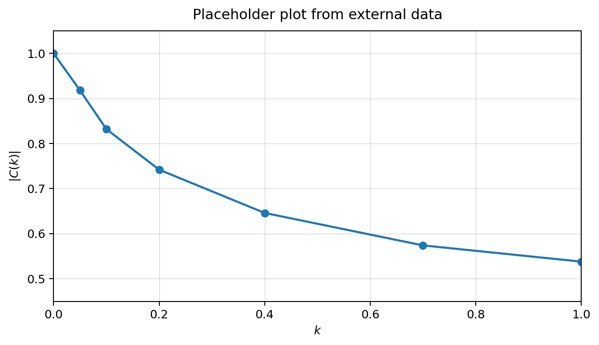

Harmonic Oscillating Airfoils
Abstract
This note introduces harmonic plunging and pitching airfoils as a compact route into unsteady thin-airfoil theory. The central idea is to replace arbitrary time histories by complex harmonic amplitudes, so that aerodynamic memory appears through frequency-domain transfer functions. The resulting framework clarifies the role of reduced frequency, separates circulatory and non-circulatory effects, and prepares the ground for Theodorsen and Sears theory.
Motivation
Harmonic motion is the canonical experiment of linear unsteady aerodynamics. Instead of asking how an airfoil responds to every possible motion, one studies sinusoidal plunging, pitching, or gust inputs and reconstructs more general responses by superposition. This turns a transient aerodynamic problem into a frequency-response problem.
For teaching purposes, this is especially useful because amplitude attenuation and phase lag become visible. The wake is no longer an abstract downstream object: it becomes the mechanism that delays and reshapes the circulatory lift.
Kinematics
Consider a thin airfoil of chord $c$ in a uniform stream of speed $U$. A harmonic plunging motion $h(t)$ and a harmonic pitching motion $\alpha(t)$ may be represented by complex amplitudes, with the physical motion recovered from the real part.
Frequency-domain interpretation
In a linear theory, a harmonic input produces a harmonic output at the same frequency. The important information is therefore not the frequency itself, but the complex multiplier connecting input and output. This multiplier encodes both magnitude and phase.
where $\hat{q}$ denotes the relevant complex amplitude of the prescribed motion or gust. The transfer function $\mathcal{G}(k)$ is the frequency-domain signature of the aerodynamic model.
Route to Theodorsen theory
Theodorsen theory gives the classical incompressible, inviscid, linear response of a thin airfoil undergoing harmonic motion. Its most recognizable object is the Theodorsen function, a complex-valued function of reduced frequency.
The modulus $|C(k)|$ measures attenuation of the circulatory contribution, while $\arg C(k)$ measures phase lag induced by the wake. The non-circulatory contribution, often associated with apparent mass, must be kept separate because it does not carry the same wake-memory mechanism.
Cross-reference pattern. In this HTML framework, LaTeX-like references are written as anchors, for example . This plays the role of a lightweight \cref: it links directly to the labeled equation and remains stable when reused across the article.
Plotting from external data
A useful way to keep this note close to an Overleaf workflow is to store numerical values in a plain-text file and let the plot environment read the data directly. In a LaTeX/PGFPlots source, the figure can be regenerated whenever the data file is updated, without manually editing the plot.
For example, the package includes assets/data/theodorsen_sample.txt, a small placeholder table with reduced frequency, magnitude and phase data.
% File: figures/theodorsen_from_txt.tex
% Compile from the project root so the relative path to assets/data works.
\begin{tikzpicture}
\begin{axis}[
width=0.82\textwidth,
height=0.46\textwidth,
grid=both,
xlabel={$k$},
ylabel={$|C(k)|$},
xmin=0, xmax=1,
ymin=0.45, ymax=1.05,
tick align=outside,
legend style={draw=none, fill=none, at={(0.98,0.98)}, anchor=north east}
]
\addplot+[mark=*, thick] table[
x=k,
y=Cmag,
col sep=space
]{assets/data/theodorsen_sample.txt};
\addlegendentry{sample data}
\end{axis}
\end{tikzpicture}
assets/data/theodorsen_sample.txt. The HTML page displays the PNG directly, while the corresponding PGFPlots source is stored in figures/theodorsen_from_txt.tex.The corresponding data file is intentionally simple:
k Cmag phase_deg
0.00 1.000 0.00
0.05 0.918 -7.15
0.10 0.832 -11.60
0.20 0.742 -15.90
0.40 0.646 -17.20
0.70 0.574 -15.10
1.00 0.538 -12.90Interactive harmonic pitching
The slider below changes the reduced frequency used in a simple browser animation. It is not a numerical solver; it is a compact visual aid for understanding how faster oscillations make unsteady phase effects more apparent.
The plate oscillates harmonically about an elastic-axis marker. The dashed wake surrogate is phase-shifted to suggest aerodynamic memory.
Quick check
Question. In a frequency-domain view of unsteady thin-airfoil theory, what is the main physical meaning of increasing $k$?
Planned expansions
This page is intended to grow as a native HTML teaching paper. The next layers are: derivation of the boundary condition, Glauert-series representation, circulatory and non-circulatory lift decomposition, Theodorsen plots, Sears gust response, and comparison with time-domain indicial functions.
References
- Theodorsen, T. General Theory of Aerodynamic Instability and the Mechanism of Flutter. NACA Report 496, 1935. NASA NTRS.
- Sears, W. R. Some aspects of non-stationary airfoil theory and its practical application. Journal of the Aeronautical Sciences, 8(3), 104--108, 1941. doi:10.2514/8.10655.
- Bisplinghoff, R. L., Ashley, H., and Halfman, R. L. Aeroelasticity. Addison-Wesley, 1955. ISBN 978-0201005950.
- Wagner, H. Über die Entstehung des dynamischen Auftriebes von Tragflügeln. Zeitschrift für Angewandte Mathematik und Mechanik, 5(1), 17--35, 1925. doi:10.1002/zamm.19250050103.
Aerofólios em Oscilação Harmônica
Resumo
Esta nota introduz aerofólios em arfagem e mergulho harmônicos como uma porta de entrada compacta para a teoria não estacionária de aerofólio fino. A ideia central é substituir histórias temporais arbitrárias por amplitudes harmônicas complexas, de modo que a memória aerodinâmica apareça por meio de funções de transferência no domínio da frequência. A formulação evidencia o papel da frequência reduzida, separa efeitos circulatórios e não circulatórios, e prepara a conexão com as teorias de Theodorsen e Sears.
Motivação
O movimento harmônico é o experimento canônico da aerodinâmica não estacionária linear. Em vez de perguntar como um aerofólio responde a qualquer movimento possível, estudam-se entradas senoidais de mergulho, arfagem ou rajada, e respostas mais gerais podem ser reconstruídas por superposição.
Do ponto de vista didático, isso é especialmente útil porque atenuação de amplitude e atraso de fase tornam-se visíveis. A esteira deixa de ser apenas um objeto a jusante e passa a ser o mecanismo que atrasa e remodela a sustentação circulatória.
Cinemática
Considere um aerofólio fino de corda $c$ em uma corrente uniforme de velocidade $U$. Um movimento harmônico de mergulho $h(t)$ e um movimento harmônico de arfagem $\alpha(t)$ podem ser representados por amplitudes complexas, recuperando-se o movimento físico pela parte real.
Interpretação no domínio da frequência
Em uma teoria linear, uma entrada harmônica produz uma saída harmônica na mesma frequência. A informação relevante não é apenas a frequência, mas o multiplicador complexo que conecta entrada e saída. Esse multiplicador codifica magnitude e fase.
em que $\hat{q}$ representa a amplitude complexa relevante do movimento prescrito ou da rajada. A função de transferência $\mathcal{G}(k)$ é a assinatura, no domínio da frequência, do modelo aerodinâmico.
Caminho para a teoria de Theodorsen
A teoria de Theodorsen fornece a resposta clássica incompressível, invíscida e linear de um aerofólio fino em movimento harmônico. Seu objeto mais reconhecível é a função de Theodorsen, uma função complexa da frequência reduzida.
O módulo $|C(k)|$ mede a atenuação da contribuição circulatória, enquanto $\arg C(k)$ mede o atraso de fase induzido pela esteira. A contribuição não circulatória, geralmente associada à massa aparente, deve ser mantida separada porque não carrega o mesmo mecanismo de memória da esteira.
Padrão de referência cruzada. Nesta estrutura HTML, referências no estilo LaTeX são escritas como âncoras, por exemplo . Isso funciona como um \cref leve: o link aponta diretamente para a equação rotulada e permanece estável ao longo do artigo.
Gerando gráficos a partir de dados externos
Uma forma útil de aproximar esta página de um fluxo de trabalho em Overleaf é armazenar valores numéricos em um arquivo de texto simples e fazer o ambiente de gráfico ler esses dados diretamente. Em uma fonte LaTeX/PGFPlots, a figura pode ser regenerada sempre que o arquivo de dados for atualizado, sem editar manualmente o gráfico.
Por exemplo, o pacote inclui assets/data/theodorsen_sample.txt, uma pequena tabela provisória com frequência reduzida, módulo e fase.
% Arquivo: figures/theodorsen_from_txt.tex
% Compile a partir da raiz do projeto para manter o caminho relativo para assets/data.
\begin{tikzpicture}
\begin{axis}[
width=0.82\textwidth,
height=0.46\textwidth,
grid=both,
xlabel={$k$},
ylabel={$|C(k)|$},
xmin=0, xmax=1,
ymin=0.45, ymax=1.05,
tick align=outside,
legend style={draw=none, fill=none, at={(0.98,0.98)}, anchor=north east}
]
\addplot+[mark=*, thick] table[
x=k,
y=Cmag,
col sep=space
]{assets/data/theodorsen_sample.txt};
\addlegendentry{dados de exemplo}
\end{axis}
\end{tikzpicture}assets/data/theodorsen_sample.txt. A página HTML chama diretamente o PNG, enquanto a fonte PGFPlots correspondente fica em figures/theodorsen_from_txt.tex.O arquivo de dados correspondente é propositalmente simples:
k Cmag phase_deg
0.00 1.000 0.00
0.05 0.918 -7.15
0.10 0.832 -11.60
0.20 0.742 -15.90
0.40 0.646 -17.20
0.70 0.574 -15.10
1.00 0.538 -12.90Arfagem harmônica interativa
O controle abaixo altera a frequência reduzida usada em uma animação simples no navegador. Ele não é um resolvedor numérico; é um auxílio visual para entender como oscilações mais rápidas tornam efeitos de fase mais evidentes.
A placa oscila harmonicamente em torno de um marcador de eixo elástico. A esteira tracejada é defasada para sugerir memória aerodinâmica.
Verificação rápida
Pergunta. Na visão em domínio da frequência da teoria não estacionária de aerofólio fino, qual é o principal significado físico de aumentar $k$?
Expansões planejadas
Esta página foi pensada para crescer como um artigo didático em HTML nativo. As próximas camadas são: derivação da condição de contorno, representação por séries de Glauert, decomposição da sustentação circulatória e não circulatória, gráficos da função de Theodorsen, resposta de Sears a rajadas e comparação com funções indiciais no domínio do tempo.
Referências
- Theodorsen, T. General Theory of Aerodynamic Instability and the Mechanism of Flutter. NACA Report 496, 1935. NASA NTRS.
- Sears, W. R. Some aspects of non-stationary airfoil theory and its practical application. Journal of the Aeronautical Sciences, 8(3), 104--108, 1941. doi:10.2514/8.10655.
- Bisplinghoff, R. L., Ashley, H., and Halfman, R. L. Aeroelasticity. Addison-Wesley, 1955. ISBN 978-0201005950.
- Wagner, H. Über die Entstehung des dynamischen Auftriebes von Tragflügeln. Zeitschrift für Angewandte Mathematik und Mechanik, 5(1), 17--35, 1925. doi:10.1002/zamm.19250050103.